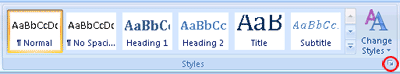

In Microsoft Office Word, styles are reusable sets of formatting options that you can apply to text. For example, suppose you want the headings in your document to appear in bold and in a particular color and font size. Although you can manually set each formatting option individually for each header, it is much easier to use a style that applies all of these options at once.
You can apply a specific style quickly and easily from the Styles gallery on the Home tab. You can also manage the contents of the gallery by adding new or other popular styles and deleting those that you don't need.
The styles that you use frequently can be kept in the Styles gallery on the Home tab for ease of use. You can create a new style and add it to the gallery at any time.
Select the text that you want to format as a new style.
For example, perhaps you want text that contains certain information about your business to always appear as bold and red in your document.
On the mini toolbar that appears above your selection, specify the formatting that you want. For example, you can click Bold and Red .
With the formatted text selected, click the More arrow in the lower-right corner of the Styles gallery, and then click Create a Style.
The Create New Style from Formatting dialog box appears.
Give the style a name—for example, Business Fact—and then click OK. The style that you created appears in the Styles gallery with the name that you gave it, ready for you to apply whenever you want to text to appear bold and red.
You can move any existing style to the Styles gallery for easy access.
On the Home tab, click the Styles Dialog Box Launcher.

The Styles pane appears.
In the lower-right corner of the Styles pane, click Options.
Under Select styles to show, click All styles.
All styles are displayed in the Styles pane.
Select text in your document in the style that you want to move, and then click the style in the Styles task pane.
The style now appears in the Styles gallery.
You can change the definition of styles that are available for your document. For example, suppose you want the Heading 1 style to stand out more. You could use a larger font size or a heavier font, or you could add more space above and below the heading.
On the Home tab, in the Styles group, right-click the style in the gallery that you want to change, and then select Modify.
In the Modify Style dialog box, change the style any way that you want, and then click OK.
For example, under Formatting, you can click the arrow next to the Color box, and then click a new font color. All instances of the style are updated automatically throughout the document.
On the Home tab, in the Styles group, right-click the style that you want to remove from the gallery.
Click Remove from Style gallery on the shortcut menu.
Note: Removing a style from the gallery does not remove the style from the entries that appear in the Styles task pane. The Styles task pane lists all of the styles in the document.